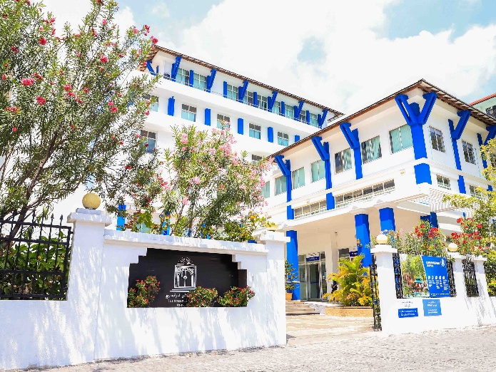
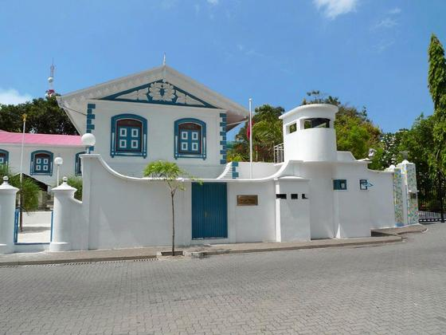
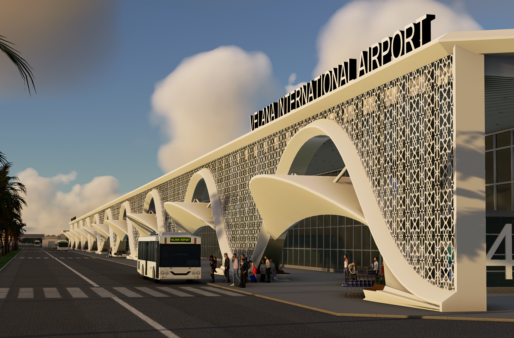
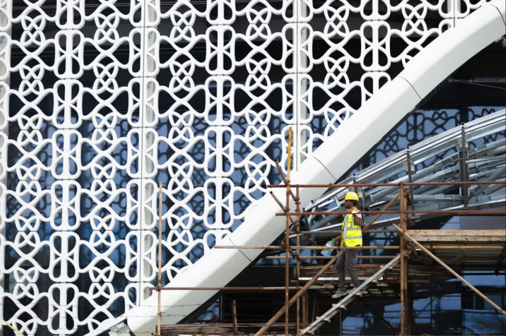
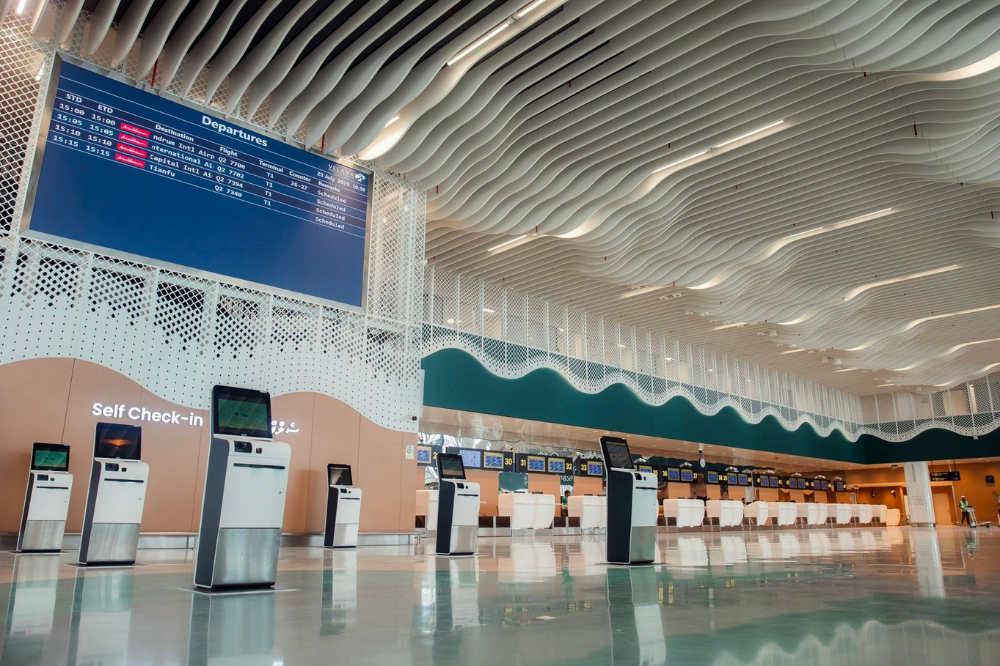

.png)
Malé has no formally recognised visual language. These guidelines propose one – rooted in the materials, patterns, and proportions already present in the city's most significant historical buildings.
Cities with distinct visual identities – Santorini's white-and-blue cliff buildings, Kyoto's low wooden streetscapes, Havana's pastel colonial facades – did not arrive at those identities by accident. They emerged from the intersection of local materials, climate, history, and building traditions over time. The visual consistency creates a sense of place that residents identify with and visitors remember.
Malé currently has no formally recognised visual language. Recent development has produced a cityscape dominated by blocky concrete structures, single-colour shiny panels, tinted glass, and no ornamentation. These buildings could be in any rapidly developing city in the world. They have no connection to the Maldives' architectural history, natural environment, or cultural patterns.
A consistent design language does two things. For residents, it creates a sense of place and civic identity – the feeling that your city looks like itself and not like everywhere else. For visitors, it creates the visual distinctiveness that makes a place memorable and worth returning to. Both outcomes serve the city's interests.
The proposed design language is built on the visual vocabulary of the Medhuziyaaraiy, Munnaaru, and Hukuru Miskiyy complex – the oldest and most architecturally significant cluster of buildings in the Maldives. These structures already contain a coherent set of colours, materials, and patterns that are distinctly Maldivian.
White with blue blocks or patterns. This is the dominant colour scheme of the Munnaaru and the surrounding complex – clean white surfaces punctuated by panels or decorative elements in shades of blue. It connects to the ocean environment, reads clearly in bright tropical light, and is already associated with Maldivian identity internationally.
Weathered or bleached stone and varnished woods. The Hukuru Miskiyy and Medhuziyaaraiy are built from coral stone that has aged to a pale, textured finish – warm and organic rather than the flat, glossy surfaces of contemporary Malé construction. Interior elements use carefully finished dark wood. These material textures can be referenced in modern construction through surface treatments, cladding choices, and material palettes that evoke the same qualities without requiring literal coral stone.
Islamic geometric patterns like those carved into the interior panels of Hukuru Miskiyy – intricate, mathematically precise designs adapted to Maldivian materials and scale. Alongside these, coconut leaf cross-thatching and weaving patterns from traditional craft. These two pattern traditions – geometric Islamic and organic woven – form the decorative vocabulary.
Stripes and lines from traditional Maldivian textiles – the liyela, the feyli, and the libaas. These linear patterns translate to architectural elements like railings, screen walls, and facade detailing.
The natural environment provides forms for architectural interpretation – coconut palm fronds, banana leaf textures, the dense clusters of the magoo plant, the silhouettes of banyan, breadfruit, and jackfruit trees, and the pink bougainvillea that already appears across the city.
Not everything in the design language comes from historical sources. Some distinctly modern elements are already characteristic of the Maldivian built environment:
Standardised Faruma typography for Dhivehi (Thaana) on public signage, and consistent English typefaces for wayfinding, would tie the written environment together across the city.
Buildings that draw on this vocabulary already exist in Malé. The Maldives National University main campus and the Velana International Airport terminals both use the blue-and-white palette, verandas, pillared facades, and decorative elements from the traditions described above. They read as Maldivian. The contrast with the dominant trend in recent construction – bright single-colour panels, tinted glass, featureless concrete – is visible on any walk through the city. The guidelines are not about criticising any particular building or business. They are about ensuring that what gets built next has something to draw from.
The design language is not a preservation mandate or a requirement to build replicas of historical structures. It is a vocabulary – a set of colours, materials, patterns, and proportions that new buildings can draw from to create a coherent visual identity across the city. Implementation follows a graduated approach:
The goal is a city that, over time, develops a recognisable visual character – not through rigid uniformity, but through a shared set of references that individual buildings interpret in their own way. The same approach that gave Santorini its white-and-blue cliff villages or Jaipur its pink sandstone facades, applied deliberately rather than waiting for it to emerge on its own.